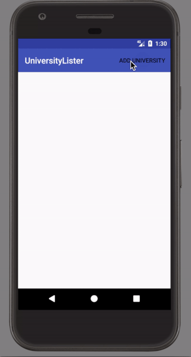
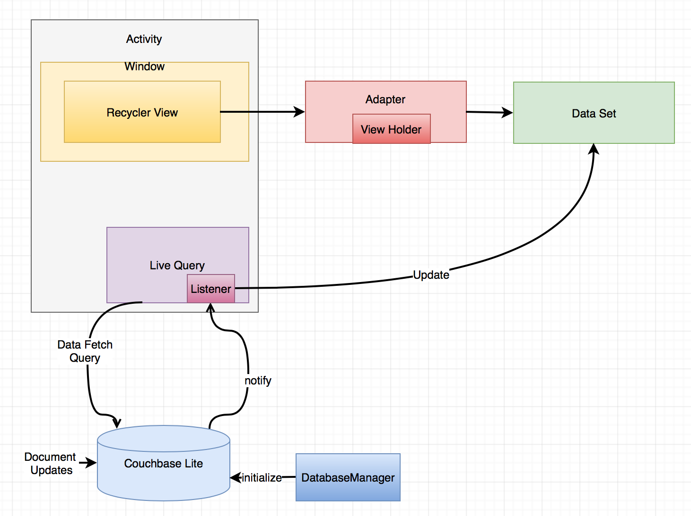

Using Couchbase Lite with Recycler Views
Introduction
The RecyclerView widget is a popular option on the Android platform for efficiently displaying dynamic data collections. The data items feeding the RecyclerView may change as a result of user’s actions or with data fetched from the network. As the name indicates, RecyclerViews recycle the views that correspond to the items in the data sets.
This tutorial will demonstrate how you can use
-
Couchbase Lite 2.0 as a data source for RecyclerViews in your Android application.
In this tutorial, we will be using Couchbase Lite as a standalone, embedded data store within your mobile app.
You can learn more about Couchbase Mobile here
Prerequisites
-
Android Studio 2.3
-
Latest Version Downloadable from Android Developer Site
-
-
git (Optional) This is required if you would prefer to pull the source code from GitHub repo.
-
Create a free github account if you don’t already have one
-
git can be downloaded from git-scm.org
-
-
Familiarity with the fundamentals of using Couchbase Lite on Android. If you need refresher, refer to our Getting Started with Android Java Guide.
-
Familiarity with the basics of Android app development apps and with RecyclerViews.
Installation
You have two options to download the App Source Code
Option 1 : Git Clone
-
Clone the master branch of the
UniversityListerproject from GitHub. Type the following command in your terminalgit clone https://github.com/couchbaselabs/UniversityLister-Android.git
Option 2 : Download .zip
-
Download the
UniversityListerproject from here
App Overview
We will be working with a very simple "University Lister" app.
The app does the following -
-
It displays a list of "university" items in a
RecyclerviewwithCouchbase Liteas the data source. -
Every time a "University" entry is added to the Couchbase Lite database, the RecyclerView displaying the university items is automatically updated to include the newly added item

Try It Out
-
Build and run the app in Android Studio.
-
Tap on the "ADD UNIVERSITY" button.
-
This will result in a new university item getting added to the RecyclerView.
Now let’s see how this works.
App Design
A typical design pattern for using Couchbase Lite as the data source for the RecyclerView in your app is shown below.
This also corresponds to the way we have implemented it in the sample app.

Here are the key elements:
-
The RecyclerView is instantiated by the Activity and contains the Adapter .
-
The Adapter is responsible for binding the data items to the view using the ViewHolder pattern.
-
Couchbase Lite is the data source for the data items that is used for populating the views.
-
The Database Manager which is a singleton class is used for initialization and management of Couchbase Lite.
-
The Couchbase Lite Query API for interacting with the database. A Couchbase Lite Live Query allows an app to register for changes to the database that affect the results of the query using the
addChangeListenercall.
This is the sequence
-
The Activity uses the Couchbase Lite Live Query to query for data items in the database and a listener is registered to handle query data updates.
-
Every time the database gets updated with data that affects the query results, the Activity is notified of the changes via the listener callback.
-
After retrieving the data from the Couchbase Lite database, the Adapter is notified of the changes.
-
The RecyclerView is then updated with the updated data set.
NOTE: How the data gets into Couchbase Lite is not important in the context of this tutorial. In a real world app, the data in Couchbase Lite may be fetched from a remote server or may be updated as a result of the local user’s action. In our app, we manually insert a randomly created University document by clicking on the "ADD UNIVERSITY" button.
Initialization
-
Open the ListActivity.java file and locate the
onCreatemethod. This is where all the initialization takes place.@Override protected void onCreate(Bundle savedInstanceState) { super.onCreate(savedInstanceState); // Initialize couchbase lite database manager dbMgr = new DatabaseManager(this); (1) // Set content layout setContentView(R.layout.activity_list); (2) // Set toolbar Toolbar toolbar = (Toolbar) findViewById(R.id.university_toolbar); setSupportActionBar(toolbar); // Get recycler view RecyclerView recyclerView = (RecyclerView)findViewById(R.id.rvUniversities); recyclerView.setAdapter(adapter); (3) recyclerView.setLayoutManager(new LinearLayoutManager(this)); // Asynchronously Load the data from local sample file DataFetcher fetcher = new DataFetcher(this,this); (4) fetcher.execute(); }1 The DatabaseManageris instantiated. This is a singleton class that is responsible for creating/opening instance of Couchbase Lite2 The typical content layout initialization is handled here 3 The RecyclerViewis configured with theUniversityListAdapteradapter and the appropriate Layout Manager.4 The DataFetcheris instantiated. The DataFetcher is an link:android asynctask[AsyncTask] that is responsible for loading sample university data from a file bundled with the app. Think of it as simulating an external source for the data. We invoke theexecute()method on the AsyncTask. More on this in the next section. We
Loading Sample Data
-
Open the DataFetcher.java file and locate the
doInBackground()function During Activity Launch, theDataFetcherclass loads the sample university data from a local file bundled with the app. The loading of data is done on a background thread usingAsyncTask.@Override protected List<University> doInBackground(Void... voids) { String fileName = "university_sample.txt"; StringBuilder stringBuilder = new StringBuilder(); List<University> universities = null; try { // Load data from local sample data file InputStream inputStream = mContext.getAssets().open(fileName); (1) // use Jackson library to map the JSON to List of University POJO ObjectMapper mapper = new ObjectMapper().configure(DeserializationFeature.FAIL_ON_UNKNOWN_PROPERTIES, false); (2) universities = Arrays.asList(mapper.readValue(inputStream, University[].class)); return universities; } catch (IOException e ) { e.printStackTrace(); return null; } } @Override protected void onPostExecute(List<University> result) { // Notify the IDataFetchResponse delegate (which in this case is ListActivity) of the availability of data mDelegate.postResult(result); }1 The sample data is loaded from the university-sample.txt file in the assets folder. The content is in JSON format. 2 Once the data is read, The JSON data is mapped to corresponding UniversityPOJO objects using the Jackson library.3 ListActivityis then notified of the completion of data load via theIDataFetchResponseinterface.
Note: The sample data is not saved into the Couchbase Lite database at this point. It is in an in-memory data structure called sampleData in the ListActivity class.
We will see how this sample data is used a little later in the tutorial.
Loading Data from Couchbase Lite And Notifying the Adapter
-
Open the ListActivity.java file and locate to the
QueryForListOfUniversities()method. This Activity sets up a "Live Query" to fetch the list of universities from the Couchbase Lite database. Initially, it will be empty.private void QueryForListOfUniversities() { try { // Create a liveQuery to fetch all documents from database query = QueryBuilder. select(SelectResult.all()). from(DataSource.database(dbMgr.database)); (1) // Add a live query listener to continually monitor for changes query.addChangeListener(new QueryChangeListener() { (2) @Override public void changed(QueryChange change) { ResultSet resultRows = change.getResults(); Result row; List<University> universities = new ArrayList<University>(); // Iterate over changed rows, corresponding documents and map to University POJO while ((row = resultRows.next()) != null) { (3) ObjectMapper objectMapper = new ObjectMapper(); // Ignore undeclared properties objectMapper.configure(DeserializationFeature.FAIL_ON_UNKNOWN_PROPERTIES, false); // Get dictionary value Dictionary valueMap = row.getDictionary(dbMgr.database.getName()); (4) // Convert from dictionary to corresponding University object University university = objectMapper.convertValue(valueMap.toMap(),University.class); universities.add(university); (5) } // Update the adapter with the newly added University documents adapter.setUniversities(universities); (6) runOnUiThread(new Runnable() { @Override public void run() { // 5. Notify adapter of changed data adapter.notifyDataSetChanged(); (7) } }); } } ); // Run Query query.execute(); (8) } catch (IllegalArgumentException e) { } catch (CouchbaseLiteException e) { e.printStackTrace(); } }1 A Query is created ising the link:http://docs.couchbase.com/mobile/2.0/couchbase-lite-java/ [Query API] to fetch all documents from Couchbase Lite database. Typically you will use a whereclause to filter the subset of documents to be fetched. But in our case, the database only holds the university documents so we just retrieve all of it.2 A query change listener is registered to listen to all database changes that impact the query. This makes the query "live". As documents are added to the Couchbase Lite database, the activity will be asynchronously notified of the additions. 3 In the listener callback, iterate over result set 4 For every result, get the ReadOnlyDictionaryobject correponding to the entry5 Convert from ReadOnlyDictionarytype to University POJO using theObjectMapper(from Jackson library)6 Update the adapter with the changed documents 7 Notify the adapter of the updated data set that will cause the RecyclerView to be reloaded with the updated data 8 Run the Query
Saving to Couchbase Lite and Triggering Database Change Updates
In the Loading Sample Data section, we discussed how to load the sample university data into an in-memory sampleData List data. This was intended to simulate the loading of data from an external source, like a web service for instance or a local user’s action. Now, we discuss when and how that data is used.
-
Open the ListActivity.java file and locate the
fetchUniversityAndAddToDatabase()method. ThefetchUniversityAndAddToDatabase()method is invoked when the user taps on the "ADD UNIVERSITY" button in the app. In this method, we insert a data item from the sample data into Couchbase Lite.private void fetchUniversityAndAddToDatabase() { Random r = new Random(); int index = r.nextInt(sampleData.size()-1); try { // Get university object at randomly selected index University university = sampleData.get(index); (1) // Construct the document from university object ObjectMapper objectMapper = new ObjectMapper(); (2) // Ignore undeclared properties objectMapper.configure(DeserializationFeature.FAIL_ON_UNKNOWN_PROPERTIES, false); HashMap<String,Object> universityMap = objectMapper.convertValue(university,HashMap.class); MutableDocument doc = new MutableDocument(universityMap); // Save document to database. dbMgr.database.save(doc); (3) } catch ( CouchbaseLiteException | NullPointerException e) { e.printStackTrace(); } }1 A random entry from the sampleDataList ofUniversityobjects is selected2 The Universtyobject is converted to Couchbase LiteDocumentusing theObjectMapperclass of Jackson library3 The Documentis inserted into the database. This insertion triggers the Query listener to be invoked.
Learn More
Congratulations on completing this tutorial!
This tutorial walked you through an example of how to use Couchbase Lite database as an embedded data source for RecyclerViews within your Android app. We looked at a simple Query example. Check out the following links for further details on the Query API